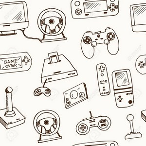
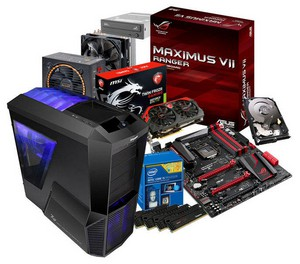

Jeux vidéos :
J'ai découvert les jeux vidéos en étant enfant, avoir joué plusieurs jeux m'a permis de développer ma curiosité, mon imagination.

PC :
Également, j'aime étudié les composants d'ordinateurs, car on l'utilise constamment donc il faudrait savoir comment ils fonctionnent.
